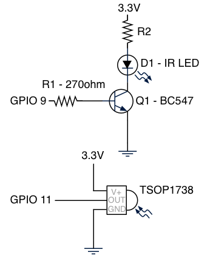
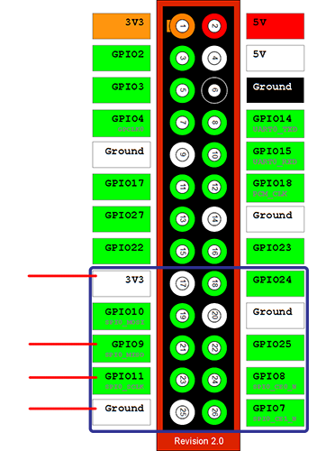
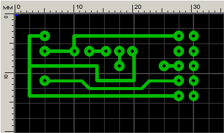
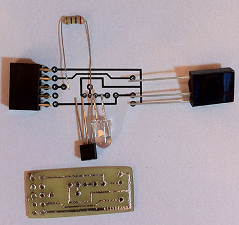
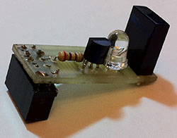
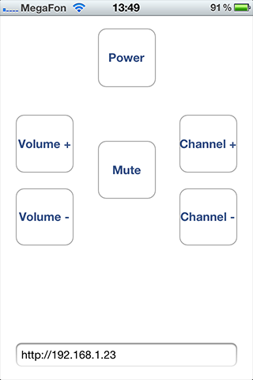

Потихоньку делаю свой дом немножко умнее. Сначала сделал управление светом с телефона с помощью платы расширения RaZBerry (Z-Wave) для Raspberry, затем увлекся программирование AVR микроконтроллеров и собрал небольшую метеостанцию, показывающую температуру на LED дисплее. Теперь очередь дошла до управления TV с помощью iPhone.
В качестве медиаплеера использую Raspberry с дистрибутивом Xbian, поэтому сразу же понял как буду управлять телевизором. Raspberry стоит на полочке под телевизором в прямой видимости. На один из выводов GPIO нужно установить ИК LED от пульта и подавать на него сигналы, которые понимает мой телевизор.
В реализации затея оказалась не сложной!
Далее речь пойдет о том, как спаять плату ИК приемо-передатчика для Raspberry и как настроить софт, чтобы с телефона переключать каналы, регулировать громкость, включать и выключать телевизор.
Для управления TV нужен ИК передатчик, а чтобы узнать какие сигналы передавать TV нужно просканировать его пульт, для этого нужен ИК приемник, поэтому плата для Raspberry будет содержать и приемник и передатчик. Плата должна занимать мало места и надеваться на GPIO. Приемник использует GPIO 11, передатчик GPIO 9, плюс питание 3.3В и земля, итого задействовано 4 вывода.
Вот принципиальная схема платы:

В ее состав входят:
1) R1 — 270 Ом (резистор)
2) R2 — не устанавливал
3) Q1 — BC547 (транзистор для усиление сигнала)
4) D1 — ИК LED из пульта 36-38 Кгц (ИК передатчик)
5) IR — TSOP1738 (ИК приемник)
На рисунке отмечено какую зону GPIO занимает модуль и какие выводы использует.

Спроектировал плату в Sprint-Layout.

Далее при помощи технологии ЛУТ изготовил маленькую плату.

Спаял:

И установил в Raspberry, модуль занимает нижние 5х2 выводов GPIO, чтобы крепче держалась. Можно занять и 5х1 выводов.

Плата готова и установлена, в качестве минусов отмечу, во первых я не расчитывал номиналы резисторов, взял те что были, если кто-то предложит правильные номиналы, я поправлю статью, во вторых ИК приемник слишком громоздкий и в прозрачный корпус Raspberry не помещается, можно использовать любой другой более компактный ИК приемник на 38Кгц.
Теперь софт, по порядку разложу что нам нужно:
1) Lirc для считывния пульта и для передачи ИК команд
2) Сервер, который принимает HTTP команды, отправляет ИК сигналы через lirc
3) Клиентсое приложение для телефона, отправляющее HTTP команды серверу
Для начала сообщим какими выводами должен пользоваться lirc для приема и отправки ИК сигналов, для этого поправим /etc/modules, чтобы загружались нужные модули:
xbian@xbian ~ $ cat /etc/modules
# /etc/modules: kernel modules to load at boot time.
#
# This file contains the names of kernel modules that should be loaded
# at boot time, one per line. Lines beginning with "#" are ignored.
# Parameters can be specified after the module name.
lirc_dev
lirc_rpi gpio_in_pin=11 gpio_out_pin=9
Перезагружаемся, устанавливаем lirc, если его демон запущен, то останавливаем его. Проверяем работает ли наш модуль командой:
xbian@xbian ~ $ sudo mode2 -d /dev/lirc0
space 16777215
pulse 4534
space 4421
pulse 621
space 1642
pulse 582
space 1648
Если поползли цифры при нажатии на кнопки, значит ИК приемник работает.
Теперь считаем пульт командой:
xbian@xbian ~ $ sudo irrecord tv_samsung.conf
Следуйте подсказкам программы и вы получить конфиг tv_samsung.conf с набором кодов от вашего пульта.
Перемещаем полученный конфиг в /etc/lirc/remotes/. Вот мой конфиг для основных кнопок:
xbian@xbian ~ $ cat /etc/lirc/remotes/tv_samsung.conf
# Please make this file available to others
# by sending it to <lirc@bartelmus.de>
#
# this config file was automatically generated
# using lirc-0.9.1-git(default) on Tue Sep 3 19:29:12 2013
#
# contributed by
#
# brand: /home/xbian/lircd2.conf
# model no. of remote control:
# devices being controlled by this remote:
#
begin remote
name TV
bits 16
flags SPACE_ENC|CONST_LENGTH
eps 30
aeps 100
header 4532 4422
one 591 1650
zero 591 540
ptrail 595
pre_data_bits 16
pre_data 0xE0E0
gap 107530
toggle_bit_mask 0x0
begin codes
KEY_POWER 0x40BF
KEY_UP 0x48B7
KEY_DOWN 0x08F7
KEY_VOLUMEUP 0xE01F
KEY_VOLUMEDOWN 0xD02F
KEY_MUTE 0xF00F
end codes
end remote
Теперь проверим передатчик. Запускаем демон lirc. Чтобы отправить ИК команды выполним:
xbian@xbian ~ $ irsend SEND_ONCE TV KEY_POWER
где:
После выполнения этой команды телевизор должен включиться или выключиться, если все работает, переходим к управлению с телефона.
Нам нужен сервер, который будет принимать HTTP запросы и выполнять команду irsend, я для этого поднял Apache http server и настроил выполнение cgi-bin скриптов. В моем дистрибутиве Xbian это делается в файле /etc/apache2/sites-enabled/000-default, разрешил выполнение cgi-bin скриптов и указал где их искать
....
ScriptAlias /cgi-bin/ /var/www/cgi-bin/
<Directory "/var/www/cgi-bin">
AllowOverride None
Options +ExecCGI -MultiViews +SymLinksIfOwnerMatch
Order allow,deny
Allow from all
</Directory>
....
Затем на bash написал скрипт, который обрабатывает HTTP запрос и выполняет команду irsend:
xbian@xbian ~ $ cat /var/www/cgi-bin/main.cgi
#!/bin/bash
echo "Content-type: text/html"
echo ""
echo "<html><head><title>Welcome</title></head>"
echo "<body>"
echo "Send IR code: "
echo $QUERY_STRING
irsend SEND_ONCE TV $QUERY_STRING
echo "</body></html>"
Делаем скрипт исполняемым:
xbian@xbian /var/www/cgi-bin $ sudo chmod +x main.cgi
Запускаем apache и пробуем из браузера включить телевизор:
192.168.1.23/cgi-bin/main.cgi?KEY_POWER
если сервер работает, в ответ получим:
Send IR code: KEY_POWER
Думаю понятно, что после /cgi-bin/main.cgi? нужно ввести команду из файла /etc/lirc/remotes/tv_samsung.conf
HTTP API есть, теперь можно управлять телевизором с любого устройства, для браузера можно написать простое приложение с сылками на команды управления телевизором. Я для iPhone написал простое приложение за 15 минут.

Если нет навыков программирования под мобильные платформы, но очень хочется, то можно воспользоваться программным продуктом OpenRemote, с помощью конструктора OpenRemote делаем дизайн приложения, расставляем кнопочки, а затем в свойствах кнопки указываем какую HTTP команду выполнять, как пользоваться этим софтом я уже писал в статье Мобильное приложения для управления умным домом на базе Z-Wave с помощью OpenRemote
Все замечания и предложения по улучшению статьи принимаю в комментариях!
Приятного управления!